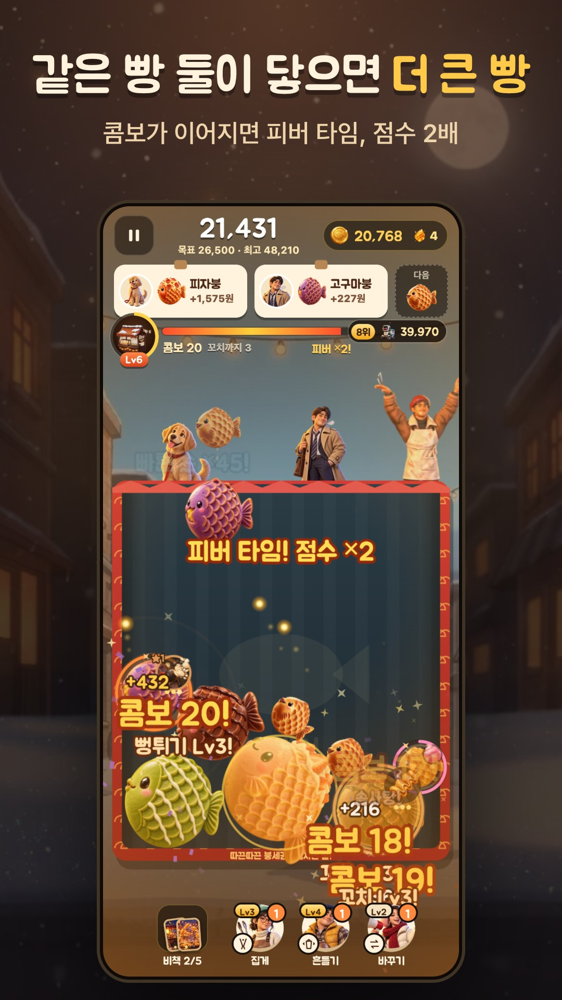

붕어빵 합치기 · 가게 성장
같은 빵 둘이 만나면,
더 큰 즐거움.
붕어빵을 떨어뜨려 같은 빵끼리 합쳐 보세요. 콤보를 이어 가고, 나만의 작은 가게를 키워 가는 모바일 퍼즐 게임입니다.
무료 다운로드 · 선택형 광고 및 앱 내 구매

떨어뜨리고, 합치고
놓을 자리를 고르고 같은 붕어빵 두 개를 맞대면 더 큰 빵이 됩니다.
콤보를 이어 가세요
연속 합성으로 콤보를 쌓고 피버 타임의 재미를 느껴 보세요.
작은 가게를 키워요
플레이하며 얻은 재화로 가게를 성장시키고 다양한 수집 요소를 만나세요.
붕세권 타이쿤은 어떤 게임인가요?
붕세권 타이쿤(Bungsegwon: Taiyaki Merge)은 주식회사 포터블뉴트리션이 만든 붕어빵 합치기 퍼즐 게임입니다. 같은 빵 둘을 합치는 퍼즐에 가게 성장과 수집 요소를 더했습니다. Android와 iPhone에서 플레이할 수 있습니다.
자주 묻는 질문
처음에는 어떻게 플레이하나요?
붕어빵을 떨어뜨릴 위치를 정하고 같은 종류 두 개가 닿도록 놓으세요. 더 큰 빵을 만들며 점수와 콤보를 쌓아 가세요.
무료로 할 수 있나요?
다운로드는 무료입니다. 선택형 보상 광고와 앱 내 구매가 있으며, 제공 상품과 가격은 이용하는 스토어와 앱의 결제 화면에서 확인할 수 있습니다.
광고를 꼭 봐야 하나요?
보상 광고는 추가 보상을 받고 싶을 때 광고 버튼을 눌러 선택합니다. 광고가 준비되지 않은 경우에는 이용할 수 없을 수 있습니다.
게임 기록은 어디에 저장되나요?
진행 기록은 기기 안에 저장됩니다. 앱을 삭제하거나 데이터를 지우면 기록도 사라질 수 있으므로 주의해 주세요.
지원하는 언어는 무엇인가요?
한국어, 영어, 일본어를 지원합니다. 게임의 설정에서 언어를 바꿀 수 있습니다.
도움이 필요하신가요?
기기 모델, 앱 버전, 문제가 생긴 순서를 이메일로 알려 주세요. 보통 영업일 3일 안에 답장드립니다.
dev@ponu.co.kr